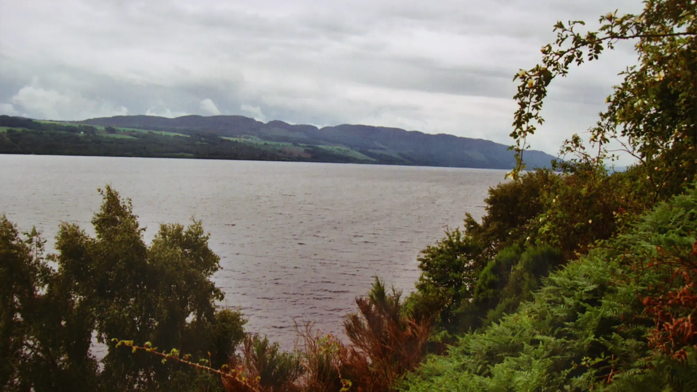
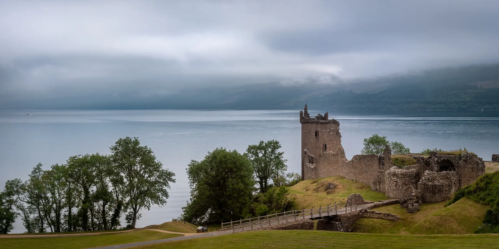
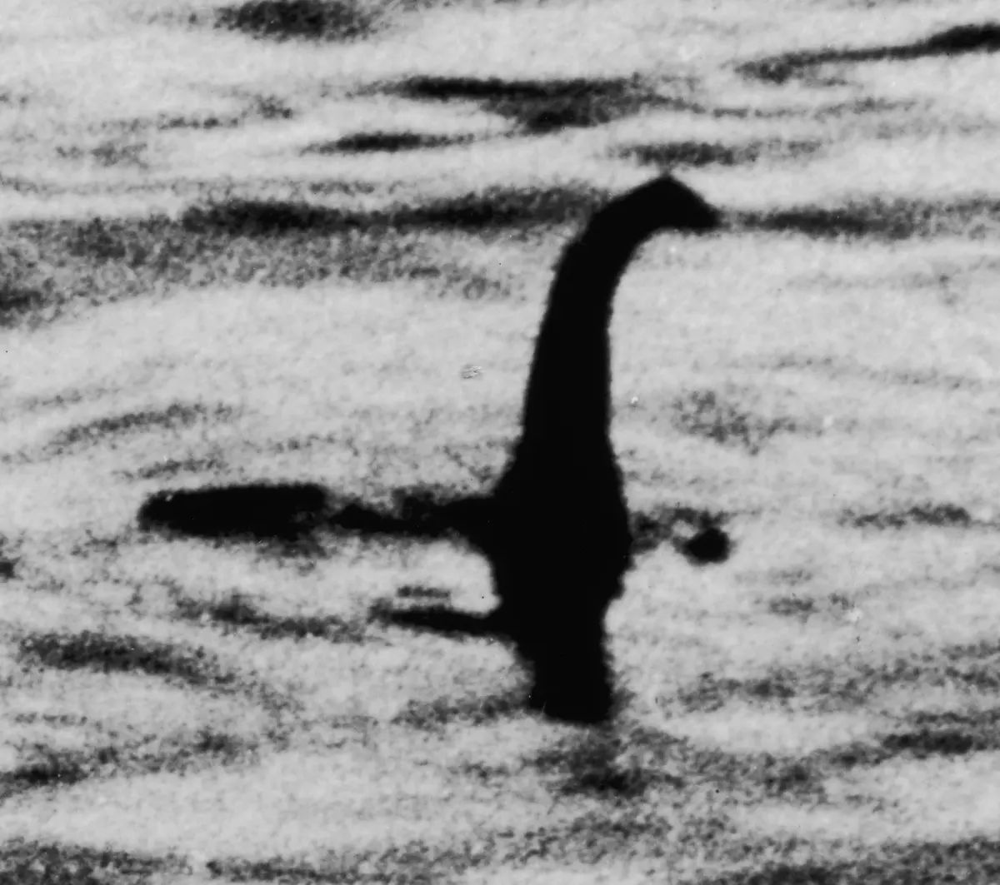
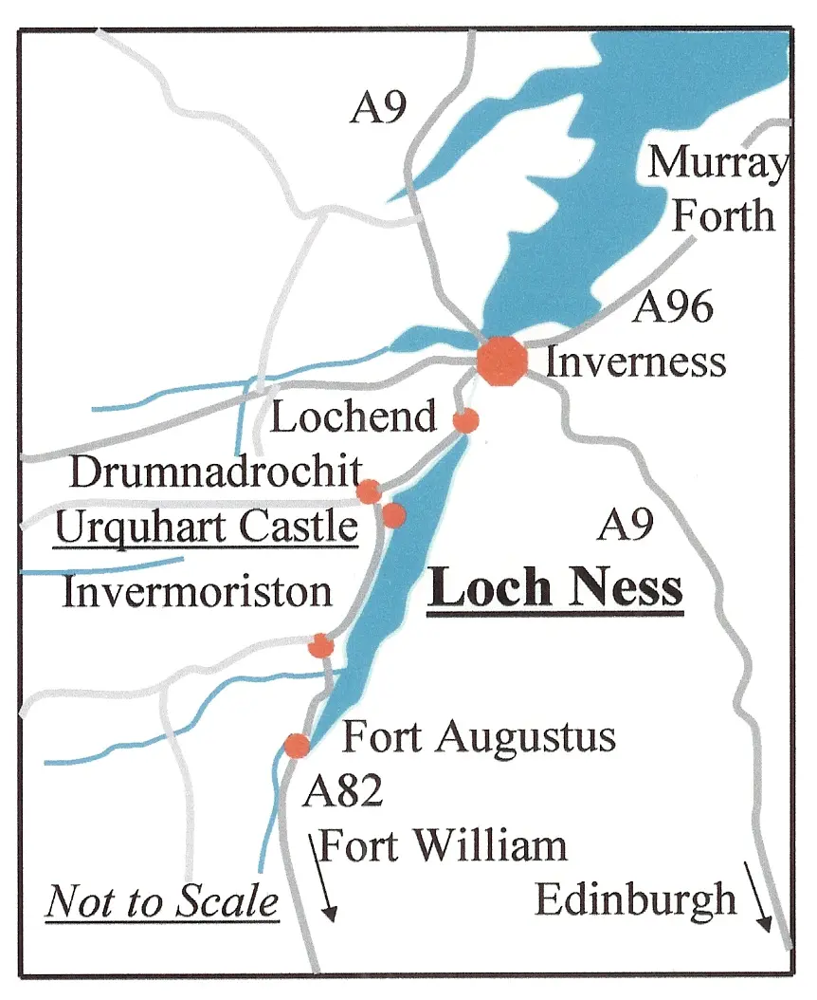
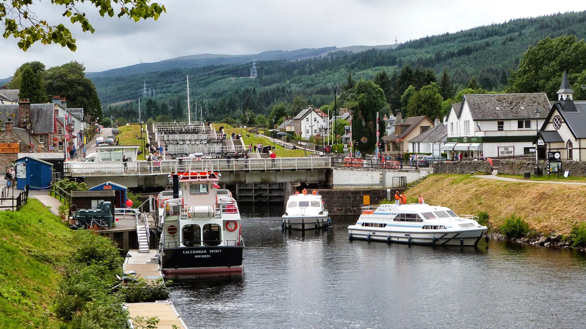

The
Loch Ness
Monster.
People have searched the surface, swept the depths and argued over the photographs for nearly a century. The legend is established. The animal is not.
The story is old. The modern case is not.
The River Ness account belongs to medieval religious writing. The worldwide version of Nessie began when a local report reached the press in 1933.

An account written around the year 700 describes Columba confronting a water beast in the River Ness in 565. It was recorded roughly a century after the alleged event and was written as part of a saint's life—not as a natural-history report.[01]
The recognizable modern case starts in April 1933, when Aldie Mackay reported seeing a large, whale-like disturbance in the loch. The Inverness Courier published the story in May, and the search became international.[02]
The early story matters to the folklore. The 1933 report matters to the modern investigation. They should not be treated as the same kind of evidence.
The case, in order.
Major reports and searches are kept together here. A place on the timeline means the event shaped the story—not that it proved the creature.
The River Ness account
Adomnán later records Columba repelling an aquatic beast in the River Ness. The text is religious hagiography written around a century after the alleged event.[01]
Aldie Mackay's report
A reported whale-like animal or violent disturbance near Drumnadrochit helps begin the modern legend.[02]
The Hugh Gray photograph
One of the first alleged photographs enters the record. Its subject remains disputed and the reproduction rights are not clear enough for us to republish it here.
The Surgeon's Photograph
The image becomes the defining silhouette of Nessie. It is now understood to have been staged with a small model.[03]
Operation Deepscan
A line of vessels draws a sonar curtain through the loch. The operation records contacts, but none establish an unknown large animal.[04]
The eDNA results
Researchers report the results of 250 water samples. No evidence supports a plesiosaur, shark, catfish or sturgeon; eel DNA appears throughout the loch.[05]
The reports continue
The independent sightings register lists 1,177 recorded reports, plus a separately counted set of webcam submissions. These remain reports, not verified animals.[06]
What holds up. What does not.
Reports, photographs, instruments and scientific surveys are different forms of evidence. The archive keeps them that way.
Showing all 5 evidence records

The photograph that defined the monster.
The picture matters because it gave the legend its most recognizable shape. That historical importance does not restore its credibility as evidence.
- Published in April 1934
- Long associated with Robert Kenneth Wilson
- Staged using a small model
- Filed here as history, not proof
The water kept a record.
Environmental DNA does not photograph an animal. It tests for biological traces left behind by the organisms living in and around the water.
What the survey actually found.
The research team reported no sequence evidence supporting plesiosaurs, sharks, catfish or sturgeon. Eel DNA appeared at nearly every sampling location.
The method could identify the presence of eel DNA, but it could not determine the size of the animals that left it. A giant eel therefore remained possible in the narrowest technical sense—not confirmed.
The study did not find a monster. It did give us a much better record of what actually lives in the loch.
A long, dark search area.
The geography is part of the case: a deep glacial trench, steep shores and peat-darkened water that can make distance and scale difficult to judge.

Reference points.
The markers connect the case record to identifiable places around the loch. Select a number on the map or in the index to inspect its location and relevance.
The southern end of Loch Ness, where the Caledonian Canal enters the loch.
Public-domain Loch Ness locator map by P.K. Niyogi, modified for this interactive index. Image and coordinate notes.
What people may be seeing.
A reasonable explanation does not mean a witness lied. Open water, distance and expectation can turn an honest observation into the wrong identification.
Boat wakes
Intersecting wakes can produce a sequence of humps that appears to move as one body, especially at a low viewing angle.
Birds and animals
Swimming birds, deer and seals can present unfamiliar profiles when only a head or back breaks the surface.
Logs and debris
Dark objects can move with wind, current and wake action while offering almost no reliable sense of scale.
Fish and eels
Known animals can appear much larger at distance. The eDNA survey confirms that eels are widespread but does not establish giant size.
Expectation
Once a shape is interpreted as a head, neck or hump, later details can be unconsciously organized around that first impression.
The mystery survives. The proof does not.
There are honest reports here, a few interesting instrument readings and a lot of history. There are also mistakes and deliberate fakes. I do not think the evidence confirms a hidden prehistoric animal—but Loch Ness has earned a better look than either blind belief or an easy joke.

Records and credits.
Reports are not confirmations. Links are kept beside the claims they support, and photographs remain credited to their actual creators.
- 01University of the Highlands and Islands · Columba, Nessie and the early accountContext for Adomnán's Life of St Columba, written around 700.View source ↗
- 02The Loch Ness Experience · Aldie Mackay and the 1933 reportHistory of the Old Drumnadrochit Hotel and the report that launched the modern legend.View source ↗
- 03Smithsonian Magazine · The Surgeon's Photograph and the eDNA searchHistorical context for the 1934 image and its later exposure as a hoax. The image license is recorded separately below.View source ↗
- 04Loch Ness Project · Operation DeepscanThe project's archive record of the 1987 sonar curtain.View source ↗
- 05University of Otago · First eDNA study of Loch NessOfficial 2019 account of the sampling method and reported results.View source ↗
- 06Official Loch Ness Monster Sightings Register1,177 recorded reports and 17 separately recorded webcam images when reviewed on 22 August 2026.View source ↗
Hero · Loch Ness
Gary Todd, 12 June 2003. CC0. Cropped and resized for layout. Original file.
.jpg){kind=link}
Urquhart Castle photograph
Mustang Joe, via Flickr and Wikimedia Commons. CC0. Cropped and resized for layout. Original file.
.jpg){kind=link}
Surgeon's Photograph
Attributed on the source record to M. A. Wetherell, published 21 April 1934. Public domain. Resized for layout. Original file.
{kind=link}
Loch Ness locator map
P.K. Niyogi. Public domain. The map was converted to WebP and fitted with an original interactive marker layer. Coordinates are rounded locator points checked against Wikidata and Historic Environment Scotland records. Original file.
.jpg){kind=link}
Fort Augustus photograph
Peter Glyn, 29 July 2014. CC0. Cropped and resized for layout. Original file.
{kind=link}
CASE REVISION // 22 AUG 2026REVISION 02 · Location index rebuilt, readability raised, sources and licenses rechecked.